Gallery¶
Every example below is a full, runnable script under examples/ in the
repository (examples/NN_*.py), each producing exactly one image in this
gallery. All example data comes from nicefigs.data: deterministic,
numpy-only synthetic fields, so the gallery, docs and tests draw the same
figures from the same data.
Maps¶
01 — Global map¶
The house default: nicefigs.map scatters per-station
values on a Robinson world map, crops Antarctica, and draws
an inset histogram that doubles as the colorbar and shows the data
distribution.

"""Global map — Robinson projection, Antarctica cropped, inset-histogram colorbar.
The house default: ``nicefigs.map`` scatters per-station values on a Robinson
world map, crops Antarctica, and draws an inset histogram that
doubles as the colorbar and shows the data distribution.
"""
import nicefigs as nf
from nicefigs import data
def make():
nf.set_theme("paper")
lon, lat, temp = data.global_points(field="temperature")
fig, ax, _ = nf.map(
lon,
lat,
temp,
cmap="RdYlBu_r",
colorbar_label="air temperature [°C]",
title="Mean annual air temperature",
)
return fig
if __name__ == "__main__":
import matplotlib
matplotlib.use("Agg")
nf.save(make(), "01_global_map", formats=("png", "pdf"))
02 — Anomaly map (binned)¶
For dense fields, kind="binned" bin-averages onto a regular grid and masks
the ocean. diverging=True picks a diverging colormap and symmetric limits
about zero — the right default for anomalies.
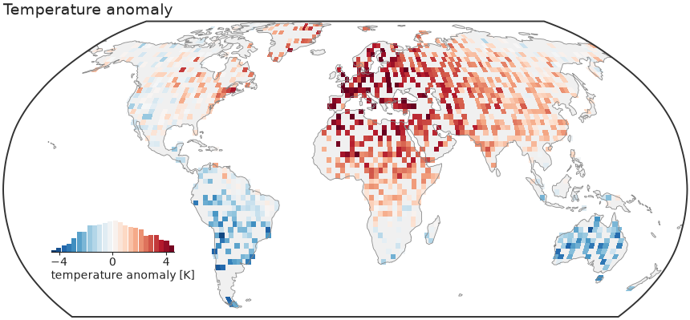
"""Binned anomaly map — diverging colormap, ocean clipped, symmetric limits.
For dense fields, ``kind="binned"`` bin-averages onto a regular grid and masks
the ocean. ``diverging=True`` picks a diverging colormap and symmetric limits
about zero — the right default for anomalies.
"""
import nicefigs as nf
from nicefigs import data
def make():
nf.set_theme("paper")
lon, lat, anom = data.global_points(n=9000, field="anomaly")
fig, ax, _ = nf.map(
lon,
lat,
anom,
kind="binned",
diverging=True,
colorbar_label="temperature anomaly [K]",
title="Temperature anomaly",
bin_deg=2.5,
)
return fig
if __name__ == "__main__":
import matplotlib
matplotlib.use("Agg")
nf.save(make(), "02_anomaly_map", formats=("png", "pdf"))
03 — Regional map¶
A bounded extent on a Plate Carrée axes with a slim colorbar instead of the inset histogram.
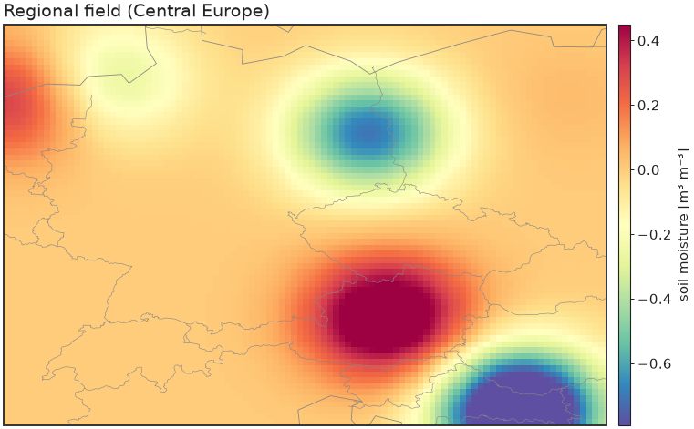
"""Regional map — a bounded extent on a Plate Carrée axes with a slim colorbar."""
import nicefigs as nf
from nicefigs import data
def make():
nf.set_theme("paper")
lon2d, lat2d, z = data.regional_grid(extent=(5, 20, 45, 55), res=0.08)
fig, ax, m = nf.map(
lon2d.ravel(),
lat2d.ravel(),
z.ravel(),
extent=(5, 20, 45, 55),
projection="platecarree",
kind="binned",
bin_deg=0.15,
cmap="Spectral_r",
inset_hist=False,
cbar=True,
colorbar_label="soil moisture [m³ m⁻³]",
borders=True,
title="Regional field (Central Europe)",
)
return fig
if __name__ == "__main__":
import matplotlib
matplotlib.use("Agg")
nf.save(make(), "03_regional_map", formats=("png", "pdf"))
04 — Shared colorbar across subplots¶
One colorbar serves a whole row of maps (no repetition), and the
with nf.style(...) context manager restyles otherwise-plain matplotlib
code — drop it on top of anything.
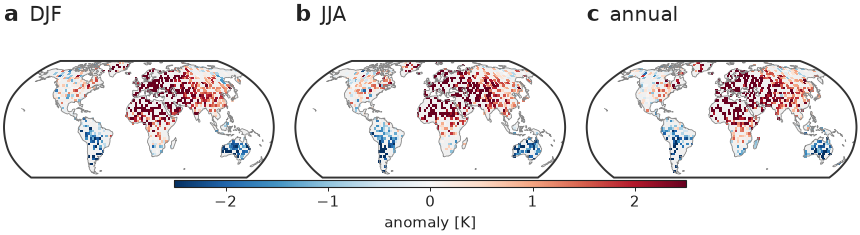
"""Shared colorbar across subplots + the ``with nf.style(...)`` context manager.
One colorbar serves a whole row of maps (no repetition), and the context manager
restyles otherwise-plain matplotlib code — drop it on top of anything.
"""
import nicefigs as nf
from nicefigs import data
def make():
import cartopy.crs as ccrs
# The context manager applies the house style just for this block.
with nf.style("paper"):
fig, axes = nf.subplots(
1,
3,
width="full",
panel_aspect=0.62,
subplot_kw={"projection": ccrs.Robinson()},
wspace=0.08,
)
seasons = ["DJF", "JJA", "annual"]
m = None
for si, ax in enumerate(axes):
lon, lat, v = data.global_points(n=6000, field="anomaly", seed=si + 1)
nf.draw_background(ax, ccrs)
ax.set_extent(nf.maps.ANTARCTICA_CUTOFF_EXTENT, crs=ccrs.PlateCarree())
_, m = nf.binned_map(
lon,
lat,
v,
ccrs=ccrs,
cmap="RdBu_r",
vmin=-2.5,
vmax=2.5,
bin_deg=3.0,
clip_ocean=True,
ax=ax,
)
# one bar spans all three panels
nf.colorbar(m, list(axes), label="anomaly [K]", location="bottom", thickness=0.03, shrink=0.6)
# combined label + short title (no separate set_title → no collision)
nf.label_panels(axes, titles=seasons)
return fig
if __name__ == "__main__":
import matplotlib
matplotlib.use("Agg")
nf.save(make(), "04_shared_colorbar", formats=("png", "pdf"))
05 — Ternary map¶
A global/regional map whose points are coloured by a 3-part composition, with a triangular legend inset that decodes the colours.
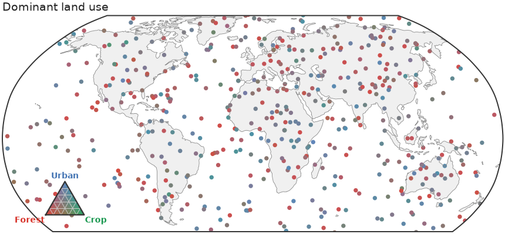
"""Ternary map — locations coloured by a 3-part composition, with a legend inset."""
import nicefigs as nf
from nicefigs import data
def make():
nf.set_theme("paper")
comp, _ = data.ternary_points(n=1400)
lon, lat, _ = data.global_points(n=1400)
n = min(len(comp), len(lon))
fig, ax = nf.ternary_map(
lon[:n],
lat[:n],
comp[:n],
labels=("Forest", "Crop", "Urban"),
size=7,
title="Dominant land use",
)
return fig
if __name__ == "__main__":
import matplotlib
matplotlib.use("Agg")
nf.save(make(), "05_ternary_map", formats=("png", "pdf"))
06 — Bivariate colormap¶
nicefigs.colormaps2d encodes two continuous
variables in one colour via a 2D palette — here bivariate_cmap
(a 4-corner bilinear blend), decoded by a square
bivariate_legend inset.
hsv_cmap and flat_cmap (a
constant-lightness CIE-Lab wheel) are drop-in alternatives with their own
hsv_legend/flat_legend.
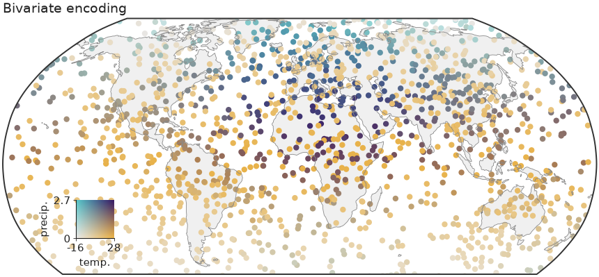
"""Bivariate (2D) colormap — encode two variables at once, with a square legend.
A global scatter coloured by a 2D palette (one variable → x-axis of the colour
square, the other → y-axis), with the key drawn as an inset.
"""
import nicefigs as nf
from nicefigs import data
from nicefigs.colormaps2d import normalize01
def make():
nf.set_theme("paper")
lon, lat, temp = data.global_points(field="temperature")
_, _, precip = data.global_points(field="sparse")
n = min(len(temp), len(precip))
lon, lat, temp, precip = lon[:n], lat[:n], temp[:n], precip[:n]
tx, trange = normalize01(temp)
py, prange = normalize01(precip)
colors = nf.bivariate_cmap(tx, py)
# Build the map ourselves so the points carry the 2D colours directly.
fig = nf.figure(width="full", aspect=0.52)
ax, ccrs = nf.make_map_axes(fig, 111, projection="robinson")
nf.draw_background(ax, ccrs)
ax.set_extent(nf.maps.ANTARCTICA_CUTOFF_EXTENT, crs=ccrs.PlateCarree())
ax.scatter(lon, lat, c=colors, s=9, linewidths=0, transform=ccrs.PlateCarree(), rasterized=True)
nf.clean_title(ax, "Bivariate encoding")
iax = ax.inset_axes([0.08, 0.14, 0.15, 0.15])
iax.patch.set_alpha(0.0)
nf.bivariate_legend(iax, x_label="temp.", y_label="precip.", x_range=trange, y_range=prange)
return fig
if __name__ == "__main__":
import matplotlib
matplotlib.use("Agg")
nf.save(make(), "06_bivariate", formats=("png", "pdf"))
Images & colormaps¶
07 — Image grid¶
Several heatmaps on a shared colour scale with one colorbar for the whole grid.
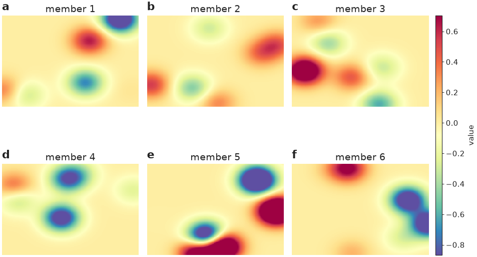
"""Image grid — several heatmaps on a shared colour scale with one colorbar."""
import nicefigs as nf
from nicefigs import data
def make():
nf.set_theme("paper")
imgs = [data.regional_grid(seed=i)[2] for i in range(6)]
fig, axes = nf.image_grid(
imgs,
nrows=2,
ncols=3,
cmap="Spectral_r",
colorbar_label="value",
titles=[f"member {i + 1}" for i in range(6)],
)
nf.label_panels(axes)
return fig
if __name__ == "__main__":
import matplotlib
matplotlib.use("Agg")
nf.save(make(), "07_image_grid", formats=("png", "pdf"))
08 — RGB imagery & land cover¶
Natural-colour imagery next to a categorical land-cover raster with a geospecific palette and matching legend.
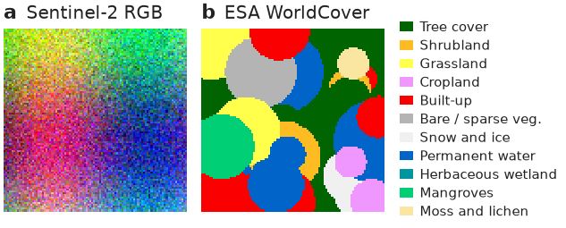
"""RGB imagery + categorical land cover — a geospecific palette with a legend."""
import nicefigs as nf
from nicefigs import data
def make():
nf.set_theme("paper")
fig, axes = nf.subplots(1, 2, width="half", panel_aspect=1.0, wspace=0.08)
nf.image(data.rgb_patch(), rgb=True, stretch=True, ax=axes[0])
lc = nf.categorical("esa_worldcover")
nf.image(lc.to_rgb(data.landcover_patch()), rgb=True, ax=axes[1])
axes[1].legend(
handles=lc.legend_handles(),
loc="center left",
bbox_to_anchor=(1.02, 0.5),
fontsize=nf.get_theme().fs_annot,
frameon=False,
handlelength=1.0,
labelspacing=0.35,
)
# combined label + title (top-left) avoids clashing with a centred title
nf.label_panels(axes, titles=["Sentinel-2 RGB", "ESA WorldCover"])
return fig
if __name__ == "__main__":
import matplotlib
matplotlib.use("Agg")
nf.save(make(), "08_landcover_rgb", formats=("png", "pdf"))
09 — Annotated heatmap¶
A labelled heatmap with row/column labels, cell annotations, and a tight colorbar.
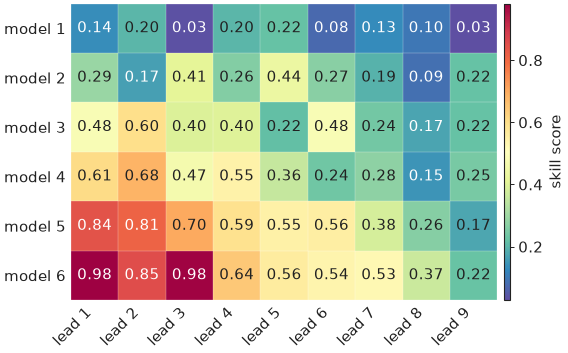
"""Annotated heatmap — labelled rows/columns with a tight colorbar."""
import nicefigs as nf
from nicefigs import data
def make():
nf.set_theme("paper")
fig, ax = nf.subplots(width="half", aspect=0.7)
_, m = nf.heatmap(
data.heatmap_matrix(shape=(6, 9)),
row_labels=[f"model {i + 1}" for i in range(6)],
col_labels=[f"lead {i + 1}" for i in range(9)],
cmap="Spectral_r",
annotate=True,
ax=ax,
)
nf.colorbar(m, ax, label="skill score")
return fig
if __name__ == "__main__":
import matplotlib
matplotlib.use("Agg")
nf.save(make(), "09_heatmap", formats=("png", "pdf"))
10 — Elevation colormap¶
A geoscience-specific colormap: a hypsometric elevation ramp with a
sea-level break, built by elevation_cmap.
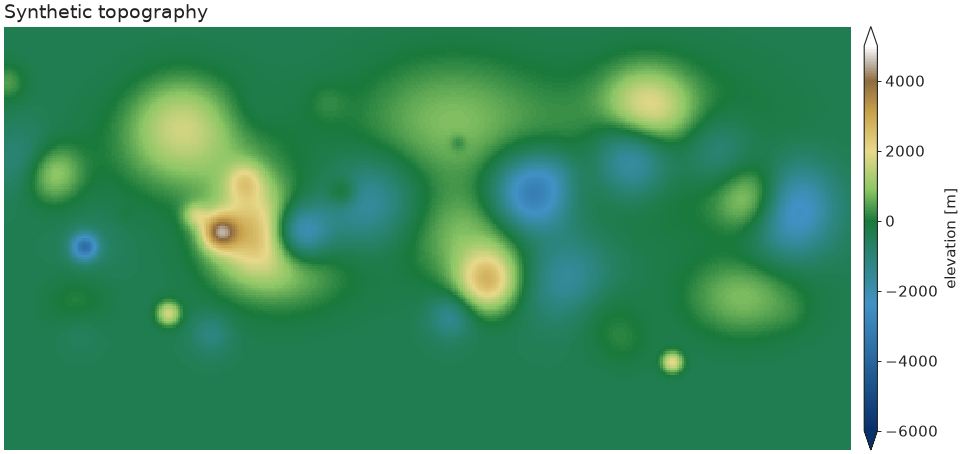
"""Geoscience colormap — hypsometric elevation ramp with a sea-level break."""
import nicefigs as nf
from nicefigs import data
def make():
nf.set_theme("paper")
z = data.elevation_field()
cmap, norm = nf.elevation_cmap(vmin=-6000, vmax=5000)
fig, ax = nf.subplots(width="full", aspect=0.5)
_, m = nf.image(z, cmap=cmap, norm=norm, extent=(-180, 180, -90, 90), ax=ax)
nf.colorbar(m, ax, label="elevation [m]", extend="both")
nf.clean_title(ax, "Synthetic topography")
return fig
if __name__ == "__main__":
import matplotlib
matplotlib.use("Agg")
nf.save(make(), "10_elevation", formats=("png", "pdf"))
11 — Ternary scatter¶
A composition (a, b, c) with a + b + c = 1 — here soil texture — encoded
as colour by blending three corner colours barycentrically, scattered inside
a triangular frame.
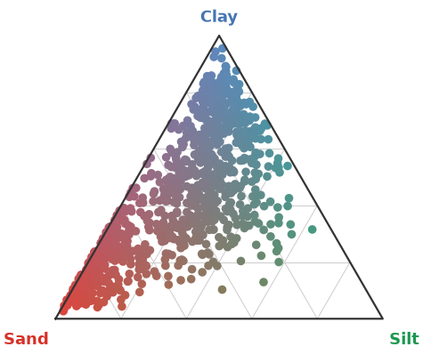
"""Ternary scatter — soil texture compositions coloured by their mixture."""
import nicefigs as nf
from nicefigs import data
def make():
nf.set_theme("paper")
comp, _ = data.ternary_points(n=900)
ax, _ = nf.ternary_scatter(comp, labels=("Sand", "Silt", "Clay"), size=12)
return ax.figure
if __name__ == "__main__":
import matplotlib
matplotlib.use("Agg")
nf.save(make(), "11_ternary", formats=("png", "pdf"))
12 — Artist-inspired palettes¶
Painterly categorical palettes ported from
MetBrewer and
MoMAColors
(artist_palette), plus two bespoke categorical
bases extracted from David Hockney's A Bigger Grand Canyon (1998):
HOCKNEY_CANYON ("hockney"), wired into
cmap("hockney_canyon") as a continuous colormap
(artist_cmap); and
NICE ("nice") — a bright teal leading the same Hockney
family — which is the house default categorical cycle, used by every
theme and by qualitative() whenever no palette
is given.
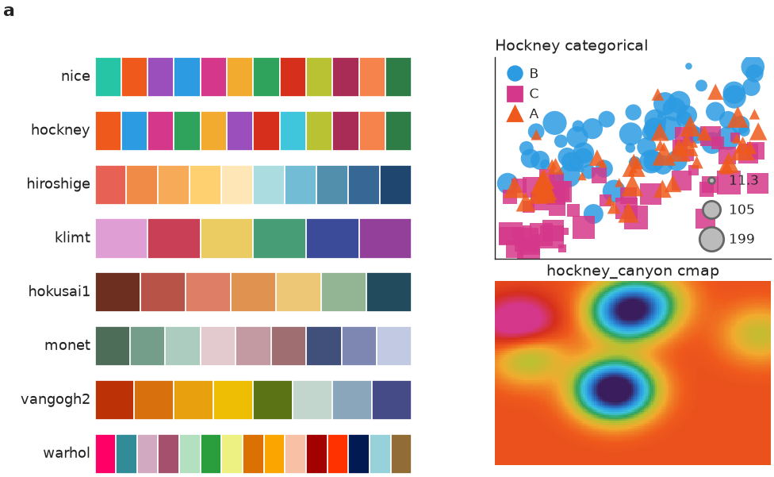
"""Artist-inspired palettes — painterly categorical schemes + the Hockney base.
Swatches for a selection of MetBrewer / MoMAColors palettes and the bespoke
David-Hockney *A Bigger Grand Canyon* categorical base, plus two demos that use
it: a grouped scatter and a field coloured by the ``hockney_canyon`` colormap.
"""
import matplotlib.pyplot as plt
import nicefigs as nf
from nicefigs import data
SHOWCASE = ["nice", "hockney", "hiroshige", "klimt", "hokusai1", "monet", "vangogh2", "warhol"]
def _swatch(ax, name):
cols = nf.artist_palette(name)
for i, c in enumerate(cols):
ax.add_patch(plt.Rectangle((i, 0), 1, 1, facecolor=c, edgecolor="white", linewidth=0.6))
ax.set_xlim(0, max(len(cols), 1))
ax.set_ylim(0, 1)
ax.set_xticks([])
ax.set_yticks([])
for sp in ax.spines.values():
sp.set_visible(False)
ax.set_ylabel(name, rotation=0, ha="right", va="center", fontsize=nf.get_theme().fs_axis_label)
def make():
nf.set_theme("paper")
fig = nf.figure(width="full", aspect=0.62)
gs = fig.add_gridspec(len(SHOWCASE), 2, width_ratios=[1.15, 1.0], wspace=0.28, hspace=0.35)
# (a) palette swatches
for i, name in enumerate(SHOWCASE):
ax = fig.add_subplot(gs[i, 0])
_swatch(ax, name)
fig.text(0.02, 0.98, "a", fontsize=nf.get_theme().fs_panel_label, fontweight="bold", va="top")
# (b) Hockney categorical scatter
ax_sc = fig.add_subplot(gs[: len(SHOWCASE) // 2, 1])
d = data.scatter_bubbles(n=150)
nf.scatter(
d["x"],
d["y"],
group=d["group"],
group_colors=dict(zip(["A", "B", "C"], nf.qualitative(3, "hockney"))),
size=d["size"],
size_label="",
legend=True,
ax=ax_sc,
)
nf.clean_title(ax_sc, "Hockney categorical")
ax_sc.set_xticks([])
ax_sc.set_yticks([])
# (c) Hockney continuous colormap on a field
ax_im = fig.add_subplot(gs[len(SHOWCASE) // 2 :, 1])
_, _, z = data.regional_grid(seed=3)
nf.image(z, cmap="hockney_canyon", robust=True, title="hockney_canyon cmap", ax=ax_im)
return fig
if __name__ == "__main__":
import matplotlib
matplotlib.use("Agg")
nf.save(make(), "12_artist_palettes", formats=("svg", "png"))
Composition¶
The same barycentric colour encoding — nicefigs.ternary.color —
underlies every ternary helper, which is what lets it drop onto different
plot kinds without change: example 11 applies it to a
scatter inside a triangular frame (ternary_scatter),
while example 05 applies the identical encoding to points on
a global map (ternary_map), reusing
ternary_legend as the inset in both cases. This
is the composability nicefigs is built around: small helpers that all take
an existing ax, so they combine freely instead of each owning a whole
figure. See the Composite figure below for the same idea
applied across map, timeseries, and agreement panels in one GridSpec.
Relational & distributions¶
13 — Multi-encoding scatter¶
Marker shape (a categorical group), size (a continuous variable), and colour map onto up to three extra variables, with a compact legend for each.
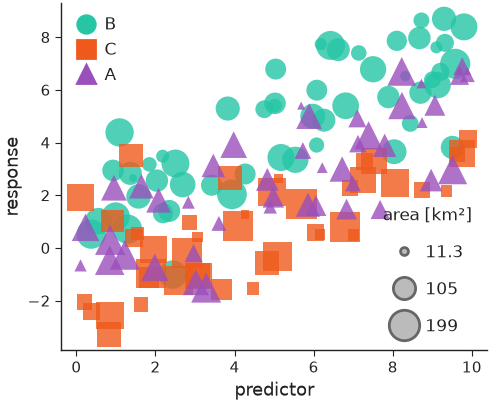
"""Scatter with three encodings — marker shape (group), size, and colour."""
import nicefigs as nf
from nicefigs import data
def make():
nf.set_theme("paper")
d = data.scatter_bubbles(n=140)
fig, ax = nf.subplots(width="half", aspect=0.82)
nf.scatter(
d["x"],
d["y"],
group=d["group"],
size=d["size"],
size_label="area [km²]",
alpha=0.8,
ax=ax,
)
nf.set_labels(ax, "predictor", "response")
return fig
if __name__ == "__main__":
import matplotlib
matplotlib.use("Agg")
nf.save(make(), "13_scatter", formats=("png", "pdf"))
14 — Agreement plot¶
The house predicted-vs-observed plot: a KDE density of the bulk of the cloud, a dashed 1:1 line, outliers as faint scatter, a solid regression line, and a compact metrics box (n, R², RMSE, bias).
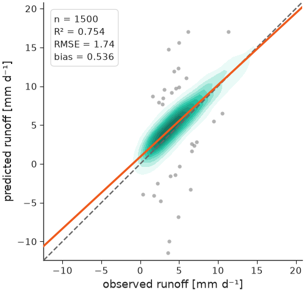
"""Agreement plot — KDE density, 1:1 line, outlier scatter, regression, metrics."""
import nicefigs as nf
from nicefigs import data
def make():
nf.set_theme("paper")
obs, pred = data.xy_agreement(r=0.92)
ax, stats = nf.agreement(
obs,
pred,
xlabel="observed runoff",
ylabel="predicted runoff",
units="mm d⁻¹",
)
return ax.figure
if __name__ == "__main__":
import matplotlib
matplotlib.use("Agg")
nf.save(make(), "14_agreement", formats=("png", "pdf"))
15 — Timeseries¶
Observations vs. models with an uncertainty band and a date axis that adapts its ticks/format to the observed time span.
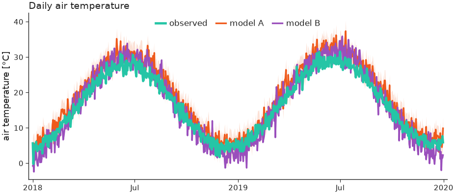
"""Timeseries — observations vs models with an uncertainty band and date axis."""
import nicefigs as nf
from nicefigs import data
def make():
nf.set_theme("paper")
dates, series = data.timeseries(n_days=730)
# a simple uncertainty band around model A
a = series["model A"]
bands = {"model A": (a - 3, a + 3)}
ax = nf.timeseries(
dates,
series,
bands=bands,
highlight="observed",
ylabel="air temperature",
yunits="degC",
title="Daily air temperature",
)
return ax.figure
if __name__ == "__main__":
import matplotlib
matplotlib.use("Agg")
nf.save(make(), "15_timeseries", formats=("png", "pdf"))
16 — Faceted station timeseries¶
Small-multiples of per-station model curtains with a sparse observation
overlay, built from nicefigs.facet (one call per panel,
consistent physical sizing) plus timeseries's
obs= overlay, per-series styles, and a per-panel annotation.
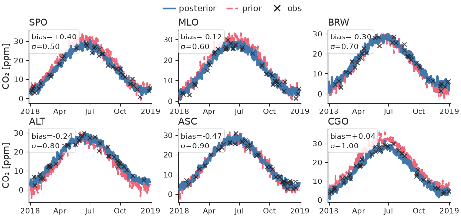
"""Faceted station timeseries — model curtains + sparse observations per station.
Uses ``nicefigs.facet`` for the small-multiples grid and ``timeseries``'s
observation overlay + per-panel annotation.
"""
import numpy as np
import nicefigs as nf
from nicefigs import data
def make():
nf.set_theme("paper")
stations = ["SPO", "MLO", "BRW", "ALT", "ASC", "CGO"]
def draw(ax, station, i):
dates, series = data.timeseries(n_days=365, seed=i + 1, series=["posterior", "prior"])
rng = np.random.default_rng(i)
idx = np.sort(rng.choice(365, 36, replace=False))
obs = ([dates[k] for k in idx], series["posterior"][idx] + rng.normal(0, 1, 36))
nf.timeseries(
dates,
series,
ax=ax,
obs=obs,
obs_label="obs",
styles={"prior": "--", "posterior": "-"},
highlight="posterior",
colors={"posterior": "#4477AA", "prior": "#EE6677"},
annotation=f"bias={rng.normal(0, 0.4):+.2f}\nσ={0.5 + 0.1 * i:.2f}",
ylabel="CO₂" if i % 3 == 0 else "",
yunits="ppm",
legend=False,
)
fig, axes = nf.facet(stations, draw, ncols=3, panel_aspect=0.62, titles=stations)
# one shared legend for the whole figure
import matplotlib.lines as ml
handles = [
ml.Line2D([], [], color="#4477AA", label="posterior"),
ml.Line2D([], [], color="#EE6677", ls="--", label="prior"),
ml.Line2D(
[], [], color="#222222", marker="x", ls="None", markersize=4, markeredgewidth=0.8, label="obs"
),
]
fig.legend(
handles=handles,
loc="upper center",
bbox_to_anchor=(0.5, 1.02),
ncol=3,
fontsize=nf.get_theme().fs_legend,
frameon=False,
)
return fig
if __name__ == "__main__":
import matplotlib
matplotlib.use("Agg")
nf.save(make(), "16_station_timeseries", formats=("png", "pdf"))
32 — Eigen-spectra¶
nicefigs.spectrum plots covariance eigenvalue spectra
against rank on log–log axes (left, with a k^-1 reference power law) or as
cumulative explained variance with markers where each series reaches 50, 90
and 99 % (right). Numerically zero tails are dropped.
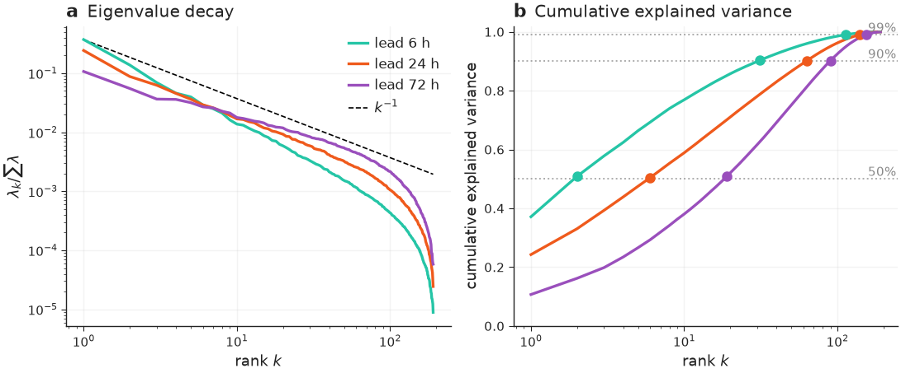
"""Eigen-spectra — eigenvalue decay and cumulative explained variance, side by side."""
import nicefigs as nf
from nicefigs import data
def make():
nf.set_theme("paper")
spectra = data.eigen_spectra()
fig, (ax1, ax2) = nf.subplots(1, 2, width="full", aspect=0.42, layout="constrained")
nf.spectrum(spectra, ax=ax1, reference_alpha=1.0, title="Eigenvalue decay")
nf.spectrum(spectra, ax=ax2, cumulative=True, legend=False, title="Cumulative explained variance")
nf.label_panels([ax1, ax2], use_ax_title=True)
return fig
if __name__ == "__main__":
import matplotlib
matplotlib.use("Agg")
nf.save(make(), "32_spectrum", formats=("png", "pdf"))
Comparison & ranking¶
17 — Model comparison¶
One panel per metric, a violin per model, dodged by an optional group (e.g. timescale), with a single shared legend.
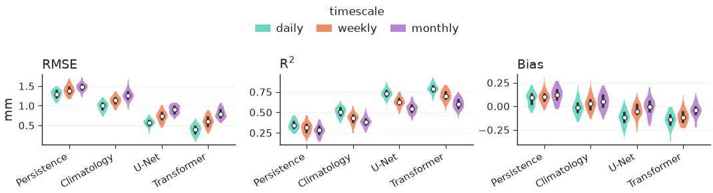
"""Model comparison — one panel per metric, a violin per model, split by timescale."""
import nicefigs as nf
from nicefigs import data
def make():
nf.set_theme("paper")
scores = data.model_scores()
fig, axes = nf.model_comparison(
scores,
group_label="timescale",
kind="violin",
metric_units={"RMSE": "mm"},
)
return fig
if __name__ == "__main__":
import matplotlib
matplotlib.use("Agg")
nf.save(make(), "17_model_comparison", formats=("png", "pdf"))
18 — Pareto frontier¶
nicefigs.pareto scatters a trade-off (here speed vs.
skill) with the non-dominated frontier drawn per
group, arrows from xdirection/ydirection on the axis labels showing which
way is better, and labelled baselines as reference lines.
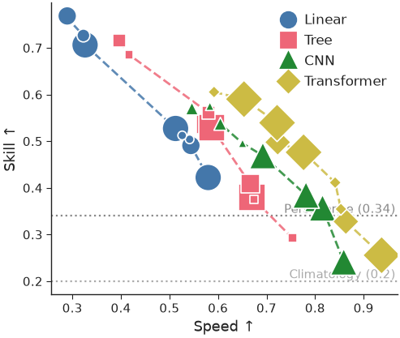
"""Pareto plot — a speed vs skill trade-off, one frontier per model family."""
import nicefigs as nf
from nicefigs import data
def make():
nf.set_theme("paper")
d = data.pareto_tradeoff()
ax, _ = nf.pareto(
d["x"],
d["y"],
group=d["group"],
size=d["size"],
group_colors={
"Linear": "#4477AA",
"Tree": "#EE6677",
"CNN": "#228833",
"Transformer": "#CCBB44",
},
frontier_per_group=True,
xdirection="higher_better",
ydirection="higher_better",
xlabel="Speed",
ylabel="Skill",
baselines={"Persistence": 0.34, "Climatology": 0.20},
)
return ax.figure
if __name__ == "__main__":
import matplotlib
matplotlib.use("Agg")
nf.save(make(), "18_pareto", formats=("png", "pdf"))
19 — Caterpillar / forest plot¶
nicefigs.caterpillar ranks per-item values ± error
(here per-site bias ± σ), with an optional baseline series offset alongside
each item, a reference line at the null, and a headline summary annotation.
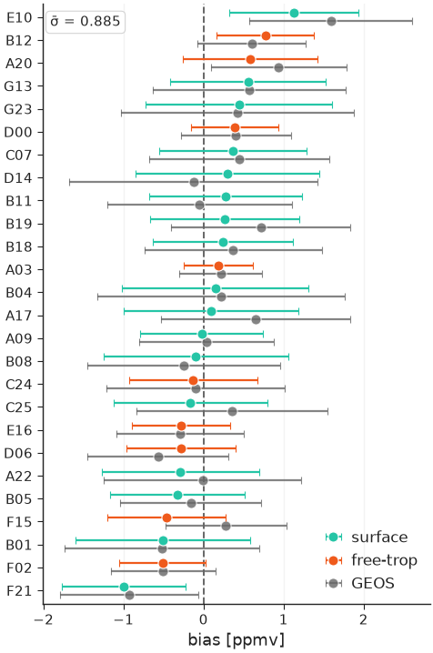
"""Caterpillar / forest plot — per-site bias ± σ, ranked, with a baseline model."""
import numpy as np
import nicefigs as nf
from nicefigs import data
def make():
nf.set_theme("paper")
s = data.site_metrics(n_sites=26)
ax = nf.caterpillar(
s["labels"],
s["bias"],
err=s["std"],
groups=s["layer"],
baseline=s["baseline"],
baseline_label="GEOS",
value_label="bias",
value_units="ppmv",
summary=("σ̄", float(np.sqrt(np.mean(s["std"] ** 2)))),
ref_line=0.0,
)
return ax.figure
if __name__ == "__main__":
import matplotlib
matplotlib.use("Agg")
nf.save(make(), "19_caterpillar", formats=("png", "pdf"))
20 — Scorecard¶
nicefigs.scorecard renders a model×metric table as
coloured cells — normalised independently per column and respecting each
metric's direction (lower/higher better) — with the best model per metric
outlined.
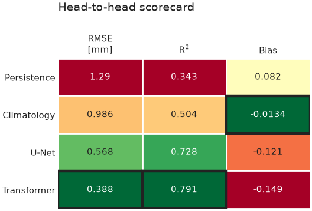
"""Scorecard — a model×metric table coloured per column by how good each value is."""
import numpy as np
import nicefigs as nf
from nicefigs import data
def make():
nf.set_theme("paper")
ms = data.model_scores()
models, metrics = ms["models"], ms["metrics"]
vals = np.array([[np.mean(ms["scores"][m][mdl]["daily"]) for m in metrics] for mdl in models])
ax = nf.scorecard(
vals,
row_labels=models,
col_labels=metrics,
direction={"RMSE": "lower_better", "Bias": "target", "R$^2$": "higher_better"},
col_units={"RMSE": "mm"},
title="Head-to-head scorecard",
)
return ax.figure
if __name__ == "__main__":
import matplotlib
matplotlib.use("Agg")
nf.save(make(), "20_scorecard", formats=("png", "pdf"))
21 — Grouped & stacked bars¶
nicefigs.grouped_bars dodges one bar per
(category, series); nicefigs.stacked_bars
stacks series within each category (normalize=True for fractions) —
both take a plain ax so they drop into any layout.
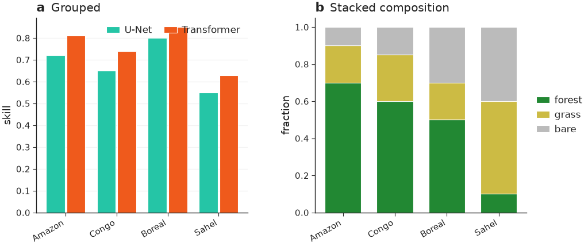
"""Grouped and stacked bars — models × metric, and land-cover composition."""
import nicefigs as nf
def make():
nf.set_theme("paper")
fig, axes = nf.subplots(1, 2, width="full", panel_aspect=0.8, wspace=0.32)
regions = ["Amazon", "Congo", "Boreal", "Sahel"]
nf.grouped_bars(
regions,
{"U-Net": [0.72, 0.65, 0.80, 0.55], "Transformer": [0.81, 0.74, 0.85, 0.63]},
value_label="skill",
rotation=30,
ax=axes[0],
)
nf.stacked_bars(
regions,
{"forest": [0.7, 0.6, 0.5, 0.1], "grass": [0.2, 0.25, 0.2, 0.5], "bare": [0.1, 0.15, 0.3, 0.4]},
normalize=True,
rotation=30,
colors={"forest": "#228833", "grass": "#CCBB44", "bare": "#BBBBBB"},
ax=axes[1],
)
nf.label_panels(axes, titles=["Grouped", "Stacked composition"])
return fig
if __name__ == "__main__":
import matplotlib
matplotlib.use("Agg")
nf.save(make(), "21_bars", formats=("png", "pdf"))
30 — Scorecard, diverging¶
nicefigs.scorecard's opt-in kwargs for a
WeatherBench2-style skill scorecard: an explicit diverging norm (here
scorecard_diverging_cmap) colours
cells by their actual percent-difference value anchored at zero instead of
per-column goodness ranking; col_groups clusters columns with a gap and a
group title; square=True forces square cells; colorbar=True draws a
horizontal bar with the colormap's extend triangles.
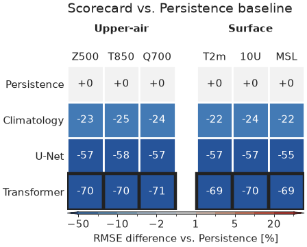
"""Scorecard with the WeatherBench2-inspired diverging colormap, grouped columns, and a colour bar."""
import numpy as np
import nicefigs as nf
from nicefigs import data
def make():
nf.set_theme("paper")
models = ["Persistence", "Climatology", "U-Net", "Transformer"]
variables = ["Z500", "T850", "Q700", "T2m", "10U", "MSL"]
groups = ["Upper-air"] * 3 + ["Surface"] * 3
# Percent RMSE difference of each model vs. the Persistence baseline, per
# variable — the shape a WeatherBench2-style skill scorecard compares.
pct_diff = np.zeros((len(models), len(variables)))
for j in range(len(variables)):
ms = data.model_scores(seed=100 + j, models=models, metrics=["RMSE"], timescales=["daily"])
rmse = np.array([np.mean(ms["scores"]["RMSE"][m]["daily"]) for m in models])
pct_diff[:, j] = 100.0 * (rmse - rmse[0]) / rmse[0]
cmap, norm = nf.scorecard_diverging_cmap()
ax = nf.scorecard(
pct_diff,
row_labels=models,
col_labels=variables,
cmap=cmap,
norm=norm,
direction=dict.fromkeys(variables, "lower_better"),
col_groups=groups,
square=True,
cell_format="{:+.0f}",
colorbar=True,
colorbar_label="RMSE difference vs. Persistence [%]",
title="Scorecard vs. Persistence baseline",
)
return ax.figure
if __name__ == "__main__":
import matplotlib
matplotlib.use("Agg")
nf.save(make(), "30_scorecard_diverging", formats=("png", "pdf"))
Vertical structure¶
22 — Cross-section / curtain¶
nicefigs.cross_section_panels lays out
several latitude×pressure curtains (cross_section
per panel) with shared value/difference colorbars — diff_fields routes named
fields onto a symmetric, diverging scale, and log_y log-scales the vertical
(pressure) axis.
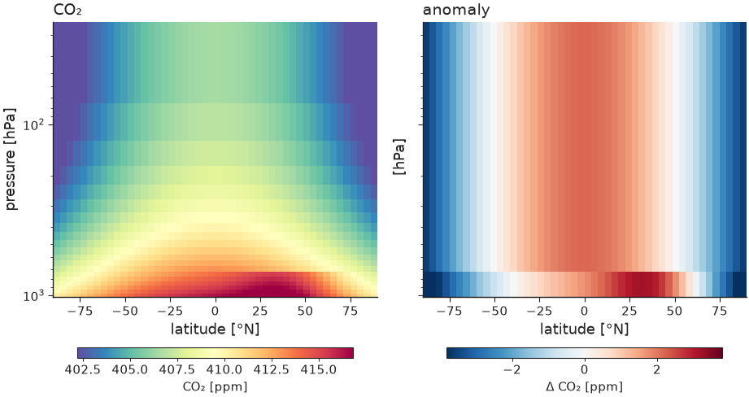
"""Cross-section / curtain — latitude × pressure, value and anomaly panels."""
import nicefigs as nf
from nicefigs import data
def make():
nf.set_theme("paper")
cs = data.cross_section_field()
val = cs["value"]
anom = val - val.mean(axis=0, keepdims=True)
fig, axes = nf.cross_section_panels(
{"CO₂": val, "anomaly": anom},
cs["lats"],
cs["levels"],
diff_fields={"anomaly"},
value_label="CO₂ [ppm]",
diff_label="Δ CO₂ [ppm]",
log_y=True,
)
return fig
if __name__ == "__main__":
import matplotlib
matplotlib.use("Agg")
nf.save(make(), "22_cross_section", formats=("png", "pdf"))
Composite & animation¶
23 — Composite publication figure¶
Shows the pieces composing: a GridSpec from nicefigs.grid
(a projected map panel plus two analysis panels), a colorbar hugging the map,
and (a) (b) (c) panel labels — all at a single physical width so fonts stay
consistent across every panel, whether it's a map, a timeseries, or a scatter
plot.

"""Composite publication figure — maps, timeseries and agreement in one layout.
Shows the pieces composing: a GridSpec from ``nicefigs.grid`` (a projected map
panel plus two analysis panels), a colorbar hugging the map, and ``(a) (b) (c)``
panel labels — all at a single physical width so fonts stay consistent.
"""
import nicefigs as nf
from nicefigs import data
def make():
nf.set_theme("paper")
fig = nf.figure(width="full", aspect=0.62)
gs = fig.add_gridspec(2, 2, height_ratios=[1.15, 1.0], hspace=0.42, wspace=0.32)
# (a) global map spanning the top row
ax_map, ccrs = nf.make_map_axes(fig, gs[0, :], projection="robinson")
lon, lat, temp = data.global_points(field="temperature")
_, m = nf.scatter_map(lon, lat, temp, ccrs=ccrs, cmap="RdYlBu_r", size=4, ax=ax_map)
nf.draw_background(ax_map, ccrs)
ax_map.set_extent(nf.maps.ANTARCTICA_CUTOFF_EXTENT, crs=ccrs.PlateCarree())
nf.colorbar(m, ax_map, label="T [°C]")
# (b) timeseries
ax_ts = fig.add_subplot(gs[1, 0])
dates, series = data.timeseries(n_days=730)
nf.timeseries(dates, series, ax=ax_ts, highlight="observed", ylabel="T", yunits="degC", legend=False)
ax_ts.legend(
loc="lower right",
bbox_to_anchor=(1.0, 1.0),
ncol=3,
frameon=False,
borderaxespad=0.2,
handlelength=1.0,
handletextpad=0.4,
columnspacing=0.8,
)
# (c) agreement
ax_ag = fig.add_subplot(gs[1, 1])
obs, pred = data.xy_agreement()
nf.agreement(obs, pred, ax=ax_ag, xlabel="obs", ylabel="pred", units="mm")
nf.label_panels([ax_map, ax_ts, ax_ag])
return fig
if __name__ == "__main__":
import matplotlib
matplotlib.use("Agg")
nf.save(make(), "23_composite_figure", formats=("png", "pdf"))
24 — Map animation¶
A drifting field animated over a fixed colour scale (computed once across all frames so colours are comparable frame-to-frame), saved to GIF.
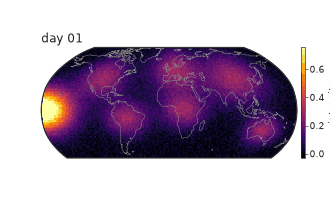
"""Map animation — a drifting field with a fixed colour scale, saved to GIF."""
import nicefigs as nf
from nicefigs import data
def make(path="24_animation.gif"):
nf.set_theme("paper")
lon, lat, frames = data.map_timeseries_cube(n_frames=24)
fig, _, anim = nf.animate_maps(
lon,
lat,
frames,
cmap="inferno",
titles=[f"day {i + 1:02d}" for i in range(len(frames))],
colorbar_label="intensity",
fps=8,
)
out = nf.save_animation(anim, path, fps=8)
return out
if __name__ == "__main__":
import matplotlib
matplotlib.use("Agg")
print("wrote", make())
Model evaluation & time–space¶
25 — Taylor diagram¶
nicefigs.taylor summarises correlation, standard
deviation and centred RMS difference against a reference in one polar plot — the
standard one-glance model-evaluation chart. Pass one entry per model with a
correlation and either an absolute std or a normalised std_ratio.
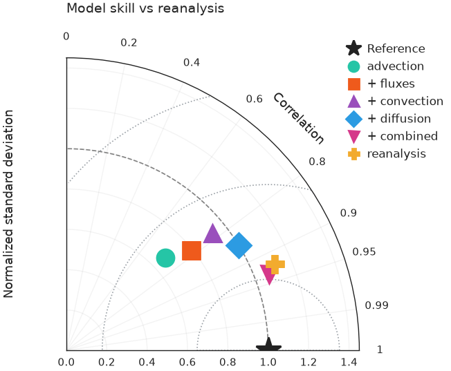
"""Taylor diagram — correlation, standard deviation and centred RMS at a glance."""
import nicefigs as nf
from nicefigs import data
def make():
nf.set_theme("paper")
ax = nf.taylor(data.taylor_stats(), title="Model skill vs reanalysis")
return ax.figure
if __name__ == "__main__":
import matplotlib
matplotlib.use("Agg")
nf.save(make(), "25_taylor", formats=("png", "pdf"))
26 — Hovmöller diagram¶
nicefigs.hovmoller plots a field over one spatial
coordinate and time; nicefigs.hovmoller_panels
lays out model, reference and their difference with shared value / difference
colorbars. The time axis accepts numbers or datetime objects.
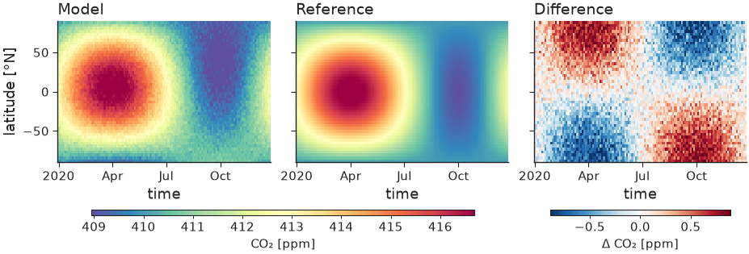
"""Hovmöller diagram — a latitude × time field, with model / reference / difference."""
import nicefigs as nf
from nicefigs import data
def make():
nf.set_theme("paper")
h = data.hovmoller_field()
diff = h["value"] - h["reference"]
fig, _ = nf.hovmoller_panels(
{"Model": h["value"], "Reference": h["reference"], "Difference": diff},
h["times"],
h["lats"],
diff_fields={"Difference"},
value_label="CO₂ [ppm]",
diff_label="Δ CO₂ [ppm]",
)
return fig
if __name__ == "__main__":
import matplotlib
matplotlib.use("Agg")
nf.save(make(), "26_hovmoller", formats=("png", "pdf"))
27 — Vertical profile¶
nicefigs.profile is the 1-D companion to
cross_section: several profiles (value vs level/pressure) with an inverted,
optionally log-scaled vertical axis and dashed baselines.
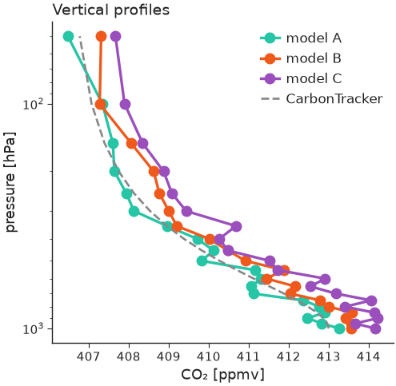
"""Vertical profiles — value vs pressure, inverted log axis, with a baseline."""
import nicefigs as nf
from nicefigs import data
def make():
nf.set_theme("paper")
vp = data.vertical_profiles()
ax = nf.profile(
vp["profiles"],
vp["levels"],
baselines={"CarbonTracker": vp["baseline"]},
xlabel="CO₂",
xunits="ppmv",
ylabel="pressure",
yunits="hPa",
log_y=True,
title="Vertical profiles",
)
return ax.figure
if __name__ == "__main__":
import matplotlib
matplotlib.use("Agg")
nf.save(make(), "27_profile", formats=("png", "pdf"))
28 — Frame-based animation engine¶
nicefigs.render_animation renders each frame
with your own draw(i) -> Figure callback and stitches them with
nicefigs.stitch_frames (MP4 via ffmpeg, GIF
fallback). A frame can be anything — here a field snapshot and a running
timeseries side by side, which animate_maps alone can't do. Pass
method="parallel" to fan the frames out across CPU cores for large or
expensive animations.
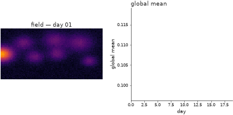
"""Frame-based animation engine — a multi-panel frame drawn per step, stitched.
``render_animation`` takes a ``draw(i) -> Figure`` callback, so a frame can be
anything (here: a map-like image *and* a running timeseries side by side —
which ``animate_maps`` alone can't do). Pass ``method="parallel"`` to render the
frames across CPU cores for large / expensive animations.
"""
import numpy as np
import nicefigs as nf
from nicefigs import data
_LON, _LAT, _FRAMES = data.map_timeseries_cube(n_frames=20, shape=(60, 120))
_GLOBAL_MEAN = _FRAMES.reshape(len(_FRAMES), -1).mean(axis=1)
def draw(i):
"""Draw frame ``i``: a field snapshot + the global-mean trace so far."""
nf.set_theme("paper")
fig, axes = nf.subplots(1, 2, width="full", panel_aspect=0.8, wspace=0.28)
nf.image(
_FRAMES[i],
cmap="inferno",
vmin=float(_FRAMES.min()),
vmax=float(_FRAMES.max()),
title=f"field — day {i + 1:02d}",
ax=axes[0],
)
axes[1].plot(np.arange(i + 1), _GLOBAL_MEAN[: i + 1], color=nf.COLORS["blue"])
axes[1].set_xlim(0, len(_FRAMES) - 1)
axes[1].set_ylim(_GLOBAL_MEAN.min(), _GLOBAL_MEAN.max())
nf.set_labels(axes[1], x="day", y="global mean")
nf.clean_title(axes[1], "global mean")
return fig
def make(path="28_render_animation.gif"):
# method="sequential" here keeps the gallery self-contained; use
# method="parallel" (the default) to fan frames out across cores.
return nf.render_animation(draw, len(_FRAMES), path, fps=6, dpi=90, method="sequential")
if __name__ == "__main__":
import matplotlib
matplotlib.use("Agg")
make()
29 — Timeseries with hue-mapped observations¶
timeseries's sparse obs= overlay can be coloured
by a third variable via obs_hue (e.g. sample altitude) instead of the flat
obs_color, with obs_colorbar=True drawing a slim colorbar for it. The
legend still gets one proxy handle for the overlay, not one per point.
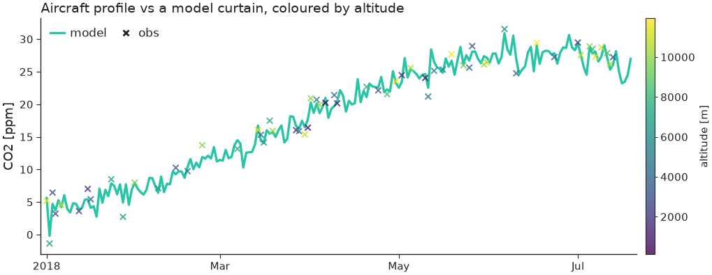
"""Timeseries — sparse observations coloured by a third variable (e.g. altitude)."""
import numpy as np
import nicefigs as nf
from nicefigs import data
def make():
nf.set_theme("paper")
dates, series = data.timeseries(n_days=200, series=["model"])
rng = np.random.default_rng(0)
idx = np.sort(rng.choice(len(dates), 60, replace=False))
odates = [dates[i] for i in idx]
ovals = series["model"][idx] + rng.normal(0, 1, 60)
altitude = rng.uniform(0, 12000, 60)
ax = nf.timeseries(
dates,
series,
obs=(odates, ovals),
obs_hue=altitude,
obs_cmap="viridis",
obs_hue_label="altitude [m]",
obs_colorbar=True,
ylabel="CO2",
yunits="ppm",
title="Aircraft profile vs a model curtain, coloured by altitude",
)
return ax.figure
if __name__ == "__main__":
import matplotlib
matplotlib.use("Agg")
nf.save(make(), "29_timeseries_obs_hue", formats=("png", "pdf"))
31 — Panel label composed with an existing title¶
label_panels's use_ax_title=True picks up each
panel's own ax.set_title() (as set by hovmoller_panels
here) and redraws it next to the bold letter at one height, instead of
leaving matplotlib's separately-positioned title floating at its own default
spot.
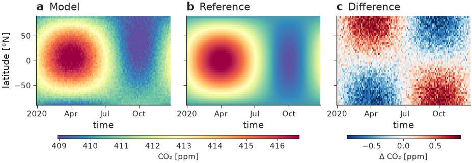
"""Panel letter + per-panel title composed onto one line.
``hovmoller_panels`` sets each panel's title via matplotlib's own
``ax.set_title`` (centred, its own default height). Calling
``label_panels(..., use_ax_title=True)`` afterwards picks that title back up,
clears it from matplotlib, and redraws it next to the bold letter at one
height — ``a Model`` / ``b Reference`` / ``c Difference`` — instead of a bold
letter and a title floating at two different positions.
"""
import nicefigs as nf
from nicefigs import data
def make():
nf.set_theme("paper")
h = data.hovmoller_field()
diff = h["value"] - h["reference"]
fig, axes = nf.hovmoller_panels(
{"Model": h["value"], "Reference": h["reference"], "Difference": diff},
h["times"],
h["lats"],
diff_fields={"Difference"},
value_label="CO₂ [ppm]",
diff_label="Δ CO₂ [ppm]",
)
# Compose each panel's existing ax.set_title with the bold letter, instead
# of letting the two render at different heights/positions.
nf.label_panels(axes, use_ax_title=True)
return fig
if __name__ == "__main__":
import matplotlib
matplotlib.use("Agg")
nf.save(make(), "31_panel_label_with_title", formats=("png", "pdf"))